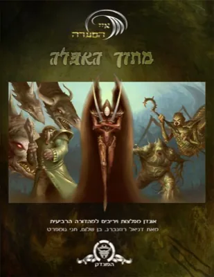
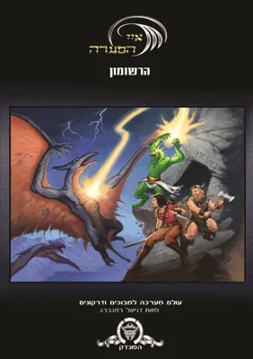
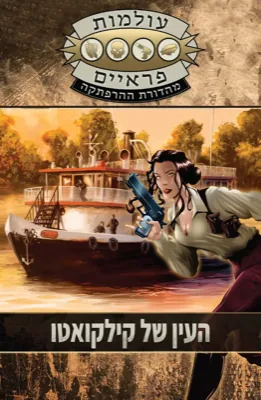
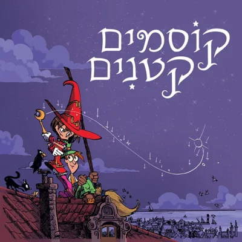
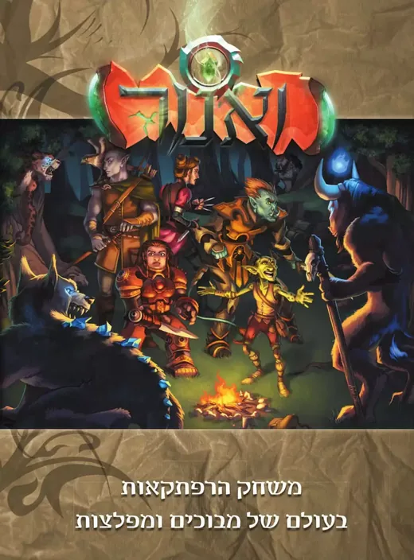
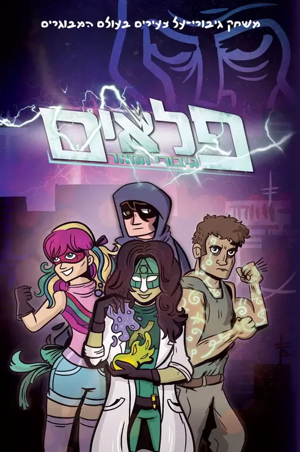
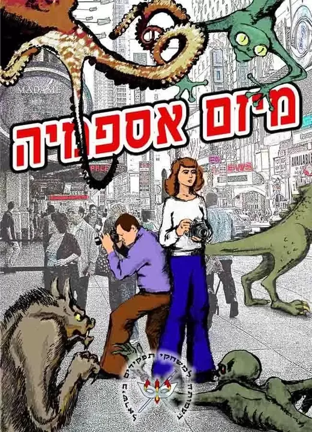
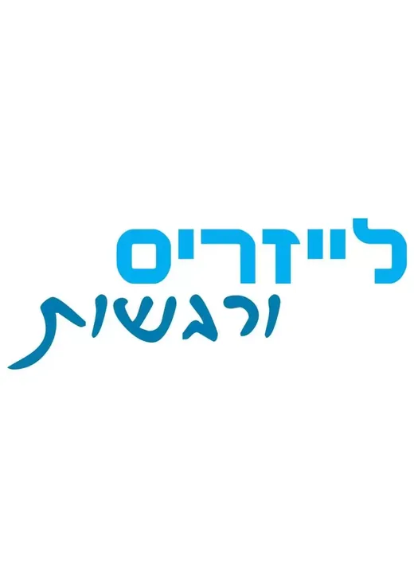
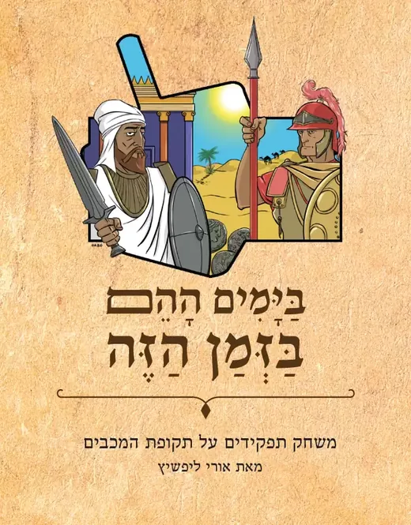

קטלוג משחקי התפקידים בעברית
כל משחקי התפקידים שיוצאים בעברית, במקום אחד. בוחרים משחק, ועוברים לקנות אותו ישירות בחנות של ההוצאה.
73 מוצרים
המחירים נבדקו ב-4.10.2026 ועשויים להשתנות. הרכישה עצמה נעשית באתר החנות.
 נתיב הרפתקאותעליית שרי הרונות₪99–199מכירה מוקדמת
נתיב הרפתקאותעליית שרי הרונות₪99–199מכירה מוקדמת ספר חוקיםפאת’פיינדר בעולמות פראיים, ספר הבסיס₪90–180
ספר חוקיםפאת’פיינדר בעולמות פראיים, ספר הבסיס₪90–180 אסופת הרפתקאותאסופת ההרפתקאות – עולמות פראיים₪150
אסופת הרפתקאותאסופת ההרפתקאות – עולמות פראיים₪150 מגדיר מפלצותאוגדן המפלצות 2₪60–120
מגדיר מפלצותאוגדן המפלצות 2₪60–120 ספר הרחבההמדריך המתקדם לשחקן₪60–120
ספר הרחבההמדריך המתקדם לשחקן₪60–120 מגדיר מפלצותפאת’פיינדר בעולמות פראיים, אוגדן המפלצות₪60–120
מגדיר מפלצותפאת’פיינדר בעולמות פראיים, אוגדן המפלצות₪60–120 עזר משחק ייעודימפלצות ודמויות פנטזיה₪99
עזר משחק ייעודימפלצות ודמויות פנטזיה₪99 הרפתקההמצודה בהר קרס₪40–80
הרפתקההמצודה בהר קרס₪40–80 הרפתקהרוצח הרונות₪40–80
הרפתקהרוצח הרונות₪40–80 הרפתקהנקמה בוערת₪40–80
הרפתקהנקמה בוערת₪40–80 ערכת הנחיההערכה למנחה₪30–80
ערכת הנחיההערכה למנחה₪30–80 ספר הרחבהגיבורי הסערה – הרחבה של פאת’פיינדר₪40–80
ספר הרחבהגיבורי הסערה – הרחבה של פאת’פיינדר₪40–80 הרפתקהעידן הדאיקאיג’ו₪30–60
הרפתקהעידן הדאיקאיג’ו₪30–60 הרפתקהדו־קרב עם השטן₪30–60
הרפתקהדו־קרב עם השטן₪30–60 הרפתקהמרד נזיר האפר₪30–60
הרפתקהמרד נזיר האפר₪30–60 קלפים ייעודייםקלפי כוחות₪20–60
קלפים ייעודייםקלפי כוחות₪20–60 הרפתקהמגילות העוצמה – הרפתקה של פאת’פיינדר₪25–50
הרפתקהמגילות העוצמה – הרפתקה של פאת’פיינדר₪25–50
מגדיר מפלצותמתוך האפלה – אוגדן מפלצות למבוכים ודרקונים₪50 הרפתקהאלופי האור – הרפתקה של פאת’פיינדר₪25–50
הרפתקהאלופי האור – הרפתקה של פאת’פיינדר₪25–50 קלפים ייעודייםקלפי דמות 2₪10–30
קלפים ייעודייםקלפי דמות 2₪10–30 קלפים ייעודייםקלפי דמות 1₪10–30
קלפים ייעודייםקלפי דמות 1₪10–30
עולם מערכהרשומון איי הסערה – עולם מערכה למבוכים ודרקונים₪30 קלפים ייעודייםקלפי מפלצות 3₪20
קלפים ייעודייםקלפי מפלצות 3₪20 קלפים ייעודייםקלפי מפלצות 2₪20
קלפים ייעודייםקלפי מפלצות 2₪20 קלפים ייעודייםקלפי מפלצות 1₪20
קלפים ייעודייםקלפי מפלצות 1₪20
הרפתקההעין של קילקואטו₪15 ספר הרחבהמקור עוצמה: קריסטלים₪15
ספר הרחבהמקור עוצמה: קריסטלים₪15 קלפים ייעודייםקלפי סטטוס₪10
קלפים ייעודייםקלפי סטטוס₪10 קלפים ייעודייםקלפי דמות 4₪10
קלפים ייעודייםקלפי דמות 4₪10 קלפים ייעודייםקלפי דמות 3₪10
קלפים ייעודייםקלפי דמות 3₪10 עזר משחק ייעודיכוחות ולחשים₪10
עזר משחק ייעודיכוחות ולחשים₪10 מפה ייעודיתמפת אגן הים הפנימי₪10
מפה ייעודיתמפת אגן הים הפנימי₪10 התחלה מהירהלב הקריסטל, התחלה מהירהחינם
התחלה מהירהלב הקריסטל, התחלה מהירהחינם עזר משחק ייעודימפלצות ודמויות דאיקאיג’וחינם
עזר משחק ייעודימפלצות ודמויות דאיקאיג’וחינם מגה־הרפתקההמסע אל עמק לשון הנחש₪60–120
מגה־הרפתקההמסע אל עמק לשון הנחש₪60–120 מגדיר מפלצותביבר המפלצות₪60–199
מגדיר מפלצותביבר המפלצות₪60–199 ערכת התחלהחרבות וכשפים – הערכה למתחיל₪99
ערכת התחלהחרבות וכשפים – הערכה למתחיל₪99 ספר הרחבההחוברת למשחק מורחב₪90
ספר הרחבההחוברת למשחק מורחב₪90 ספר הרחבההחוברת לשחקן המתקדם₪90–120
ספר הרחבההחוברת לשחקן המתקדם₪90–120 ספר הרחבההחוברת למנחה המתקדמת₪90–120
ספר הרחבההחוברת למנחה המתקדמת₪90–120 עולם מערכהארצות הסכנה₪50–90
עולם מערכהארצות הסכנה₪50–90 הרפתקהאל תוך מקדש הצפע₪40–60
הרפתקהאל תוך מקדש הצפע₪40–60 הרפתקהמקדש הגובלינים₪40–60
הרפתקהמקדש הגובלינים₪40–60 הרפתקהאוצרו של גובלין₪40–60
הרפתקהאוצרו של גובלין₪40–60 הרפתקהמקדש הצלמוות₪40–60
הרפתקהמקדש הצלמוות₪40–60 מערכההדיבוק – מערכה אפלה במור-לבנה₪50–90
מערכההדיבוק – מערכה אפלה במור-לבנה₪50–90 דמויות מוכנותדמויות לדוגמהחינם
דמויות מוכנותדמויות לדוגמהחינם הרפתקהחורש אביב – אפלה על פני היער₪50–90
הרפתקהחורש אביב – אפלה על פני היער₪50–90 מפה ייעודיתמפות ארצות הסכנהחינם
מפה ייעודיתמפות ארצות הסכנהחינם הרפתקהאור כחול דועך₪40
הרפתקהאור כחול דועך₪40 הרפתקהצווחת סרטני הנהר₪40
הרפתקהצווחת סרטני הנהר₪40 הרפתקההצללים של תאר קארדין₪40
הרפתקההצללים של תאר קארדין₪40 עולם מערכההביצה השחורהחינם
עולם מערכההביצה השחורהחינם הרפתקהקבר מלכי הנחשיםחינם
הרפתקהקבר מלכי הנחשיםחינם הרפתקהריקוד השלדים₪40–60
הרפתקהריקוד השלדים₪40–60 הרפתקהאולמרק, טירת השדים₪40–60
הרפתקהאולמרק, טירת השדים₪40–60 ספר הרחבהתשעה דרקונים₪40–60
ספר הרחבהתשעה דרקונים₪40–60 מגדיר מפלצותתריסר מזלות – אסופת מפלצות₪20–40
מגדיר מפלצותתריסר מזלות – אסופת מפלצות₪20–40 מדריך חינמיהמדריך המלא להרפתקאותחינם
מדריך חינמיהמדריך המלא להרפתקאותחינם מדריך חינמיהמדריך המלא לתכך וזמםחינם
מדריך חינמיהמדריך המלא לתכך וזמםחינם הרפתקההחורף האחרון₪40
הרפתקההחורף האחרון₪40
ספר חוקיםקוסמים קטנים₪45
ספר חוקיםואנור: משחק הרפתקאות, מהדורה מחודשתהמחיר בחנות
ספר חוקיםפלאים: גיבורי המחרהמחיר בחנות
ספר חוקיםמיזם אספמיההמחיר בחנות מגזין RPGפגיון ולחשון – מנוי למגזין₪25 לגיליון או ₪120 לשנה
מגזין RPGפגיון ולחשון – מנוי למגזין₪25 לגיליון או ₪120 לשנה
ספר חוקיםלייזרים ורגשותהמחיר בחנות
ספר חוקיםבימים ההם בזמן הזההמחיר בחנות הרפתקהואנור: אוצרות הקיסרות האבודיםהמחיר בחנות
הרפתקהואנור: אוצרות הקיסרות האבודיםהמחיר בחנות מגדיר מפלצותואנור: מפלצות מעולם אחרהמחיר בחנות
מגדיר מפלצותואנור: מפלצות מעולם אחרהמחיר בחנות ספר הרחבהואנור: שליטות ונבליםהמחיר בחנות
ספר הרחבהואנור: שליטות ונבליםהמחיר בחנות הרפתקהואנור: הכת הטמאההמחיר בחנות
הרפתקהואנור: הכת הטמאההמחיר בחנות ספר משחק ליחידלשחק באור המנסרה₪80
ספר משחק ליחידלשחק באור המנסרה₪80
לא נמצאו מוצרים. נסו מילה אחרת, או חזרו לסינון "הכל".